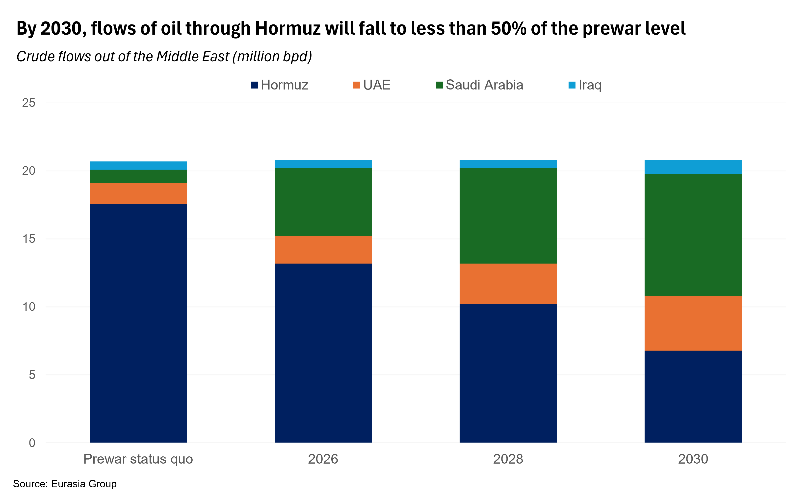

|
 |
|||
|
||||
|
||
This note focuses on infrastructure affecting oil flows. For the region’s broader shift away from Hormuz, see here. The role of the Strait of Hormuz will be significantly diminished by the end of the decade. Ongoing fighting between the US and Iran, Iran’s insistence that it retain control over the strait, and the increasingly dim prospects for stability in the waterway has compelled regional energy producers to accelerate efforts to build out alternative supply routes. Large sums are already being deployed on new infrastructure, including oil pipelines, port terminals, train tracks, and roads. The oil industry in particular is seeing quick and significant change, underscoring (again) the sector’s ability to quickly adjust to geopolitical shifts and crises. As a result, the relevance of the strait to global oil markets—while still considerable—has fallen from its prewar level and is likely to diminish over the next four years. Hormuz oil traffic will be cut in half by 2030. Already, around 7 million bpd crude from Saudi Arabia (5 million bpd) and the UAE (up to 2 million bpd) goes through pipelines that bypass the Strait of Hormuz. An additional 4 million bpd is likely to move via alternative routes by 2030, mirroring a broader trend in trade routes (see: Derisking Hormuz will reshape regional trade corridors 21 July 2026). Another 1-3 million bpd of additional capacity bypassing Hormuz could appear in the 2030s.  UAE and Saudi will expand existing routes quickly. The UAE is likely to double the capacity of its pipeline to Fujairah by early 2027. Saudi Arabia is adding berths to its port at Yanbu, allowing to utilize more capacity from its East-West pipeline. By 2028, the two producers will be able to send roughly 10 million bpd via non-Hormuz routes. Iraq’s options depend on cooperation with Syria and obtaining overseas funding. Discussions have already commenced regarding refurbishing existing pipelines—originally constructed in the 1930s—designed to carry Iraqi oil to Syrian ports on the Mediterranean. Given relatively limited Iraqi resources, Baghdad will require international oil companies to assist in reviving the long-dormant line. In addition, agreements will need to be reached with Syria regarding transit fees and security. Given considerable interest, and the support from the US, it is likely the pipeline becomes active by 2030, moving roughly 500,000 bpd, or around 15% of total Iraqi supply. Kuwait lacks good options, while Qatar will remain dependent on the strait. Geographic constraints leave Kuwait and Bahrain—both smaller producers—with fewer options for bypassing the strait. Both could conceivably send their crude via pipelines running through Saudi territory; building out these pipelines would take several years and require transit agreements with Riyadh. Qatar has no good options: the country is primarily an exporter of liquified natural gas (LNG) which cannot be easily exported via pipeline. Iranian attack on infrastructure and Houthi interference in the Red Sea will remain potent risks. All of the routes being developed to avoid the Strait of Hormuz will be within range of Iranian missiles and drones. Iran has demonstrated a willingness and capability to target regional energy in the event that it is attacked. While regional producers can attempt to manage this risk by accommodating Iran (see: GCC states will establish detente while pursuing deterrence with Iran, 17 June 2026), it will remain a relevant concern in the event of renewed or escalated hostilities. In addition, many of the existing and planned alternative routes terminate in the Red Sea, where the Houthis in Yemen retain the capability to disrupt traffic in the Bab al Mandeb (see: Houthis likely to launch limited attacks to extract Saudi payoffs, 20 July 2026). This suggests that as the market significance of Hormuz declines, that of the Bab will increase—risk to supply will therefore endure, and evolve, rather than disappear. |